Activity: Working with zones
The objective of this activity is to demonstrate how to use zones to make moving around in assemblies more efficient.
In this activity you will open an assembly with a zone, modify a zone, and create a new zone.
The assembly you will open has two zones defined. You will open the assembly using a zone, and then add a new zone.
Click the File tab →Open→Browse.
In the File Open dialog box:
-
Select frame.asm in the folder where the activity files are located.
-
Set Zone to right_front_tire, as shown.
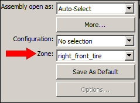
-
In the dialog box, click Open.
Observe the assembly showing the zone right_front_tire.
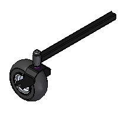
In PathFinder, on the Select Tools tab, right-click the zone right_front_tire, and then click Show Zone Box.
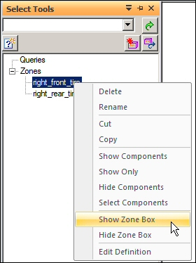
If PathFinder does not contain the tab you are looking for, such as Select Tools, Parts Library, or Family of Assemblies, you can display it by doing either of the following:
-
Choose View tab→Show group→Panes , and then select the tab name from the menu.
-
In any of the other open docking windows, such as the Layers tab or the Sensors tab, click the Display Docking Window Menu button , and then select the tab name.
Select the zone box and then click Edit Definition, as shown.
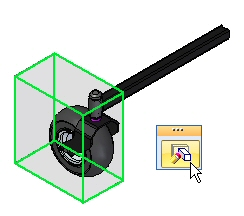
On the command bar, change the Zone Filter from Overlapping to Inside, and then click Show Components. Observe the results. The parts that are not fully contained in the zone are not shown.
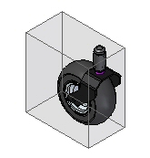
Click Finish to complete the editing of the zone.
The extent of an existing zone will be modified.
On the Select Tools tab, right-click the zone right_rear_tire and then click Show Components.
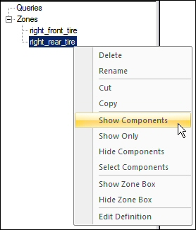
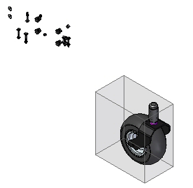
On the Select Tools tab, right-click the zone right_rear_tire and then click Show Zone Box.
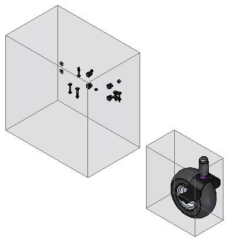
Edit the definition of the zone right_rear_tire just as you did for the right_front_tire zone. Set the Zone Filter to Overlapping and click Show Components.
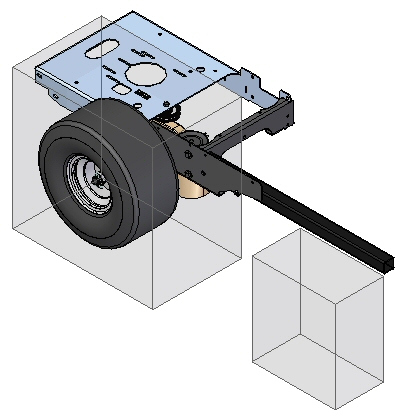
On the Edit Definition command bar, click Modify Size Step .
Select the face shown.
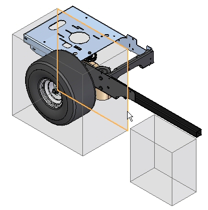
Drag the face to the approximate position shown.
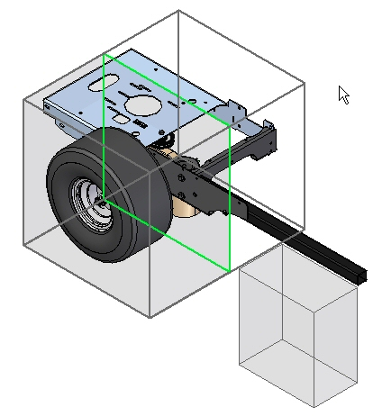
To precisely position the face, use a keypoint on some existing geometry. The part has to be active for the keypoint to be available to use.
Click Next.
Set the zone filter to Overlapping and then click Show Components. Click Finish.
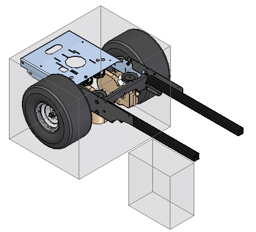
On the Select Tools tab, select both zones. Right-click and select Hide Zone Box.
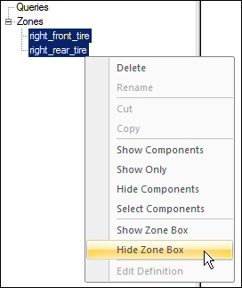
In Assembly PathFinder, right-click frame.asm, and then click Show.
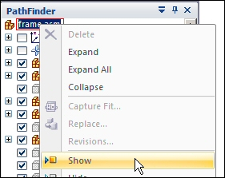
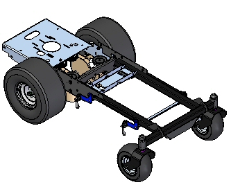
Create a new zone for the left rear tire assembly.
In PathFinder, right-click the subassembly rear_wheel_assembly_left.asm, and then click Activate.
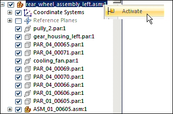
In PathFinder, right-click the subassembly rear_wheel_assembly_left.asm, and then Show Only.
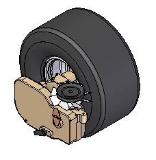
On the Select Tools tab, click the Create Zone command
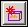
.In the Select Parts Step, select rear_wheel_assembly_left.asm in PathFinder, and then click Accept.
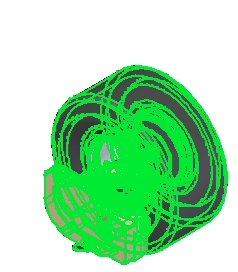
Click Next. Name the zone rear_wheel_assembly, and then click Finish. The new zone is created.
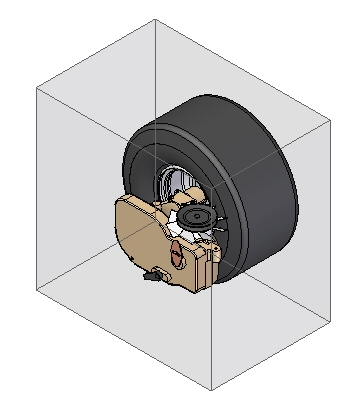
Save and close the assembly. This completes the activity.
In this activity you learned how to use zones to narrow down a specific volume of an assembly to focus your work on.
-
Click the Close button in the upper-right corner of this activity window.
Answer the following questions:
-
What is a zone?
-
Where are the zone commands located?
-
Can the extent of a zone be modified?
-
What options determine which components are displayed within the volume of a zone?
-
Is there an option to direct an assembly to be open using a zone?
-
Can zones be used to display components using the display configuration dialog box?
-
What is a zone?
A zone defines a set of components in an assembly based on the volume of space the parts occupy.
-
Where are the zone commands located?
Zones can be created and maintained on the Select Tools tab in Pathfinder.
-
Can the extent of a zone be modified?
The extent of a zone can be modified by moving one of the rectangular faces. Component key points can be used to position the zone face.
-
What options determine which components are displayed within the volume of a zone?
Two options exist for displaying components that reside within the volume of a zone. These are:
-
Inside, which displays only those components 100% contained within the volume defined by the zone.
-
Overlapping, which displays all the components that have any portion contained within the volume defined by the zone.
-
-
Is there an option to direct an assembly to be open using a zone?
In when opening an existing assembly, there is an option which specifies which existing zone will control the display of components after the assembly is opened.
-
Can zones be used to display components using the display configuration dialog box?
Zones can be chosen from the display configuration dialog box.